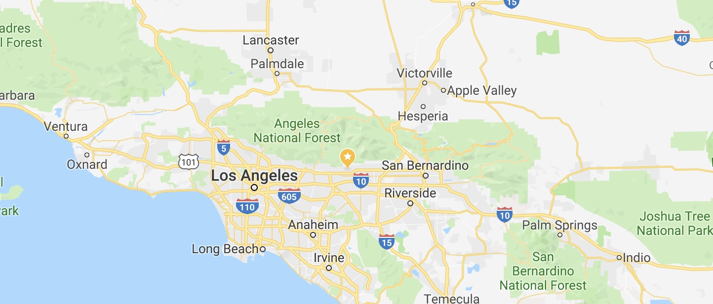
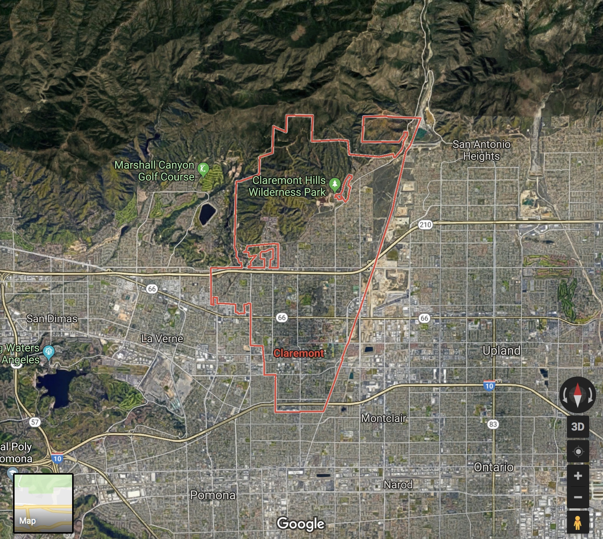
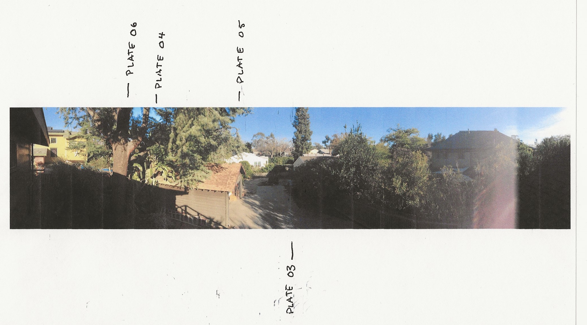
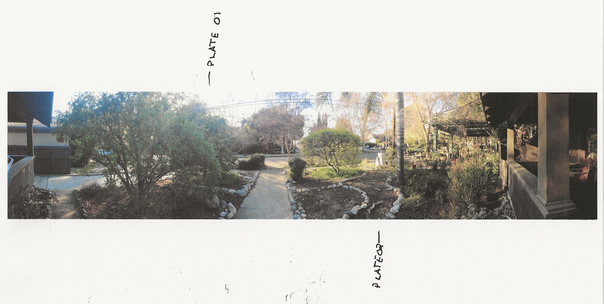

Claremont is a city on the eastern edge of Los Angeles County, California, United States, 30.3 miles east of downtown Los Angeles. It is in the Pomona Valley, at the foothills of the San Gabriel Mountains, and has a population, as of the 2015 United States Census estimate, of 36,283 people. -- Wikipedia

Claremont as seen from satellite

180 degree panorama looking East from backyard.

180 degree panorama looking West from frontyard
